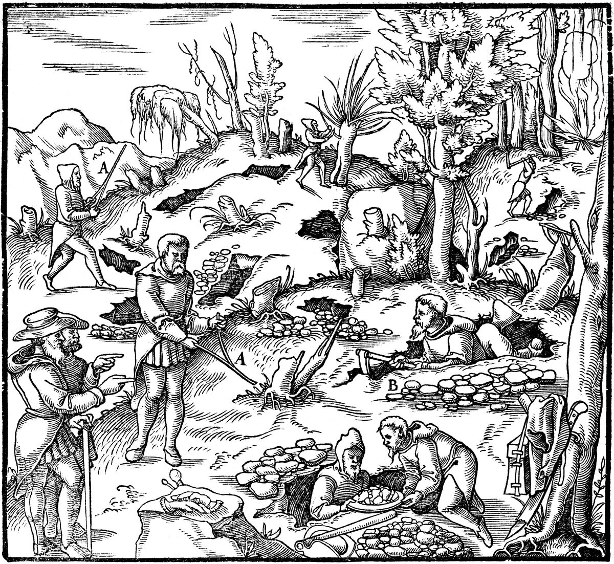

Proverbios 2 — La Traducción Mister

Unos buscadores rastrean una ladera en busca de vetas de mineral: unos andan con varillas en horquilla, otros cavan zanja tras zanja. En el texto junto a esta imagen Agricola sopesa la varilla y manda al minero, en cambio, a «los indicios naturales de las vetas, que puede ver por sí mismo», y a cavar «hasta que descubra el afloramiento de una veta» (según la versión inglesa de Herbert y Lou Henry Hoover, 1912). Proverbios 2:4 pide el mismo trabajo: «si la buscas como a la plata, y como a tesoros escondidos la escudriñas».
.jpg){kind=link}
y atesoras contigo mis mandamientos,nota
inclinando tu corazón al discernimiento,nota
y alzas tu voz por el discernimiento,nota
y como a tesoros escondidos la escudriñas,nota
y hallarás el conocimiento de Dios.nota
de su boca vienen el conocimiento y el discernimiento.nota
escudo para los que andan en integridad,nota
y guarda el camino de sus leales.nota
todo camino bueno.nota
y el conocimiento será agradable a tu alma;nota
el discernimiento te custodiará,nota
del hombre que habla perversidades,nota
para andar por los caminos de las tinieblas,nota
y se gozan en las perversidades del mal,nota
y que andan desviados en sus caminos;nota
de la extranjera que suaviza sus dichos,nota
y ha olvidado el pacto de su Dios;nota
y sus caminos hacia las sombras;nota
ni alcanzan las sendas de la vida.nota
y guardarás las sendas de los justos.nota
Notas del traductor — versículo por versículo
Si, si, si. Los primeros once versículos están construidos como una sola condición larga: tres «si» (vv. 1, 3, 4), dos «entonces» (vv. 5, 9) y un «porque» detrás de cada uno (vv. 6, 10). Después vienen dos frases que empiezan «para rescatarte» (vv. 12, 16), y el capítulo termina con «así andarás» (v. 20). Es un solo argumento del primer versículo al último. Tiene además veintidós versículos, el número de letras del alfabeto hebreo, y sus palabras clave caen en dos letras: im, «si», y az, «entonces», empiezan con álef, la primera letra; lehatsiljá, «para rescatarte», y lemáan, «así», empiezan con lámed, la letra que abre la segunda mitad del alfabeto. Algunos lectores ven en esa forma un poema alfabético, aunque el capítulo no es un acróstico. La RV60 tiene «Hijo mío, si recibieres mis palabras, Y mis mandamientos guardares dentro de ti»; la TNM 1987 «Hijo mío, si recibes mis dichos».
Atesorar. «Si recibes mis dichos, y atesoras contigo mis mandamientos»: titspón, «atesoras», es de tsafán, esconder una cosa para guardarla a salvo. El verbo vuelve en el v. 7, donde Jehová «atesora sabiduría práctica para los rectos»: el hijo atesora los mandamientos de su padre, y Dios atesora sabiduría para el hijo. Amarái, «mis dichos», es la palabra de «recibe mis dichos» (Proverbios 4:10). La TNM 1987 tiene «y atesoras contigo mis propios mandamientos»; la RV60 «Y mis mandamientos guardares dentro de ti».
Alzar la voz. «Haciendo atento tu oído a la sabiduría, inclinando tu corazón al discernimiento; sí, si llamas al entendimiento, y alzas tu voz por el discernimiento»: biná es «entendimiento» y tevuná «discernimiento», dos palabras de una misma raíz, que se mantienen aparte aquí como en el capítulo 3. Titén colejá, «alzas tu voz», es lo que hace la Sabiduría misma en el capítulo 1, donde «en las plazas alza su voz» (Proverbios 1:20, ya en estas páginas). En el capítulo 8 la llamada vuelve en sentido contrario: «¿No llama la sabiduría, y alza su voz el discernimiento?» (Proverbios 8:1). Aquí llama el hijo, y allí llama la Sabiduría. La RV60 tiene «Si clamares a la inteligencia, Y a la prudencia dieres tu voz»; la TNM 1987 «si, además, clamas por el entendimiento mismo y das tu voz por el discernimiento mismo». El griego añade una línea a cada versículo: «y la aplicarás a la amonestación de tu hijo», y «y buscas la percepción a gran voz».
Plata y tesoros escondidos. «Si la buscas como a la plata, y como a tesoros escondidos la escudriñas»: los matmonim son cosas escondidas en la tierra, la palabra del mayordomo de José: «Su Dios y el Dios de su padre les dio un tesoro en sus sacos» (Génesis 43:23). Tajpesena, «la escudriñas», es el verbo de quien busca algo escondido: Labán «buscó, pero no halló los terafines» (Génesis 31:35, ya en estas páginas), y el mayordomo «registró» los sacos de los hermanos buscando la copa (Génesis 44:12). Job usa la misma palabra del tesoro para los desdichados «que cavan por ella más que por tesoros escondidos», y lo que buscan es la muerte (Job 3:21). El griego tiene hos thesaurús, «como tesoros», la palabra de «en quien están guardados todos los tesoros de la sabiduría y del conocimiento» (Colosenses 2:3). La RV60 tiene «Si como a la plata la buscares, Y la escudriñares como a tesoros»; la Douay «and shalt dig for her as for a treasure», «y cavas por ella como por un tesoro»; la NVI «si la buscas como a la plata, como a un tesoro escondido».
Entonces. «Entonces entenderás el temor de Jehová, y hallarás el conocimiento de Dios»: la búsqueda de la sabiduría termina en algo más que sabiduría. «El temor de Jehová» es el lema del libro, «el principio del conocimiento» (Proverbios 1:7, ya en estas páginas; véase yirat YHVH), y dáat elohim, «el conocimiento de Dios», es dáat, conocer por trato. La RV60 tiene «Entonces entenderás el temor de Jehová, Y hallarás el conocimiento de Dios»; la TNM 1987 «y hallarás el mismísimo conocimiento de Dios».
De su boca. «Porque Jehová da la sabiduría; de su boca vienen el conocimiento y el discernimiento»: el hijo busca, y Jehová da; el capítulo no elige entre las dos cosas. La sabiduría llega como palabra, salida de una boca, como los dichos del padre en el v. 1. El griego tiene «de su rostro». La RV60 tiene «Porque Jehová da la sabiduría, Y de su boca viene el conocimiento y la inteligencia»; la TNM 1987 «procedentes de su boca hay conocimiento y discernimiento».
Sabiduría práctica atesorada. «Él atesora sabiduría práctica para los rectos, escudo para los que andan en integridad»: tushiyá es la «sabiduría práctica», la que saca las cosas adelante, como en Proverbios 3:21. El texto escrito tiene ve-tsafán, «y él ha atesorado»; el texto leído tiene yitspón, «él atesora», el verbo del v. 1. El griego tiene «y atesora salvación para los que obran rectamente», y la Douay, desde el latín, «He will keep the salvation of the righteous», «guardará la salvación de los justos». Maguén, «escudo», es la palabra de Dios a Abram, «Yo soy tu escudo» (Génesis 15:1, ya en estas páginas), y holjé tom, «los que andan en integridad», tiene el tom de la defensa de Abimélec, «Con integridad de mi corazón» (Génesis 20:5, ya en estas páginas). La RV 1909 tiene «El provee de sólida sabiduría á los rectos: Es escudo á los que caminan rectamente»; la NVI «Él reserva el éxito para los íntegros».
Sus leales. «Custodiando las sendas del derecho; y guarda el camino de sus leales»: los dos verbos son la pareja de Proverbios 4:6, natsar, «custodiar», y shamar, «guardar». Jasidav, «sus leales», son los que se atienen al jésed, el amor leal; el salmo dice que Jehová «no abandona a sus leales» (Salmo 37:28). La palabra está escrita sin la letra que marca el plural, de modo que las letras solas podrían leerse «su leal», y la tradición de lectura da el plural. Esa grafía escrita está en dos versículos de la Biblia hebrea, los dos con el verbo shamar: este, y el cántico de Ana, «Los pies de sus fieles guarda» (1 Samuel 2:9). La TNM 1987 tiene «y él guardará el mismísimo camino de los que le son leales»; la RV60 «Y preserva el camino de sus santos».
Las tres palabras de 1:3. «Entonces entenderás la justicia y el derecho y la equidad, todo camino bueno»: tsédeq u-mishpat u-meisharim son las tres palabras que promete el prólogo del libro, «justicia, derecho y equidad» (Proverbios 1:3, ya en estas páginas). Juntas están en dos versículos de la Biblia hebrea, aquel y este. El maagal es la rodada, el surco que una rueda abre en el camino, como en «caminos de rectitud» (Proverbios 4:11). El griego también oye la rueda, y tiene «enderezarás todos los ejes buenos», axonas; usa la misma palabra para los caminos de la mujer en el v. 18. La RV60 tiene «Entonces entenderás justicia, juicio Y equidad, y todo buen camino»; la TNM 1987 «y rectitud, el derrotero entero de lo que es bueno».
La sabiduría entra. «Porque la sabiduría entrará en tu corazón, y el conocimiento será agradable a tu alma»: yinam, «será agradable», es el verbo de la dulzura y el deleite. El hijo salió a buscar en el v. 4; aquí la sabiduría entra a él. Néfesh, «alma», es el ser vivo. La NVI tiene «la sabiduría vendrá a tu corazón y el conocimiento te endulzará la vida»; la RV60 lee el ki como «cuando», «Cuando la sabiduría entrare en tu corazón», y hace de él una condición nueva donde esta traducción lee una razón, «porque».
Una guardia a la puerta. «La discreción te guardará, el discernimiento te custodiará»: mezimá es la «discreción», como en Proverbios 1:4 (ya en estas páginas), y los verbos son otra vez shamar y natsar; el hebreo dice que la discreción guardará «sobre ti». En el v. 8 Jehová custodiaba y guardaba; aquí lo hacen la discreción y el discernimiento del propio hijo. La RV60 tiene «La discreción te guardará; Te preservará la inteligencia»; la TNM 1987 «la capacidad de pensar misma te vigilará, el discernimiento mismo te salvaguardará». El griego tiene «el buen consejo te guardará, y el pensamiento santo te custodiará».
Para rescatarte. «Para rescatarte del camino del mal, del hombre que habla perversidades»: lehatsiljá, «para rescatarte», es de natsal, arrebatar, y empieza dos versículos, este y el v. 16: hay dos peligros, un hombre y una mujer. Tahpujot, «perversidades», es de hafaj, volcar: un hablar puesto boca abajo. Es «el hombre de perversidades» de Proverbios 16:28 y «una generación de perversidad» en el cántico de Moisés (Deuteronomio 32:20). La RV60 tiene «De los hombres que hablan perversidades»; la TNM 1987 «del hombre que habla cosas perversas». El griego tiene «de un hombre que no habla nada digno de confianza».
Sendas abandonadas. «De los que abandonan las sendas de la rectitud para andar por los caminos de las tinieblas»: ha-ozvim, «los que abandonan», es el verbo que vuelve en el v. 17 para la mujer «que abandona al amigo íntimo de su juventud». Los hombres abandonan un camino, y ella abandona a una persona. Los caminos de las tinieblas son el camino de los malvados del capítulo 4, «como densa oscuridad» (Proverbios 4:19). La RV60 tiene «Que dejan los caminos derechos, Para andar por sendas tenebrosas»; la TNM 1987 «de los que dejan las sendas de la rectitud».
Gozo en el mal. «Que se alegran de hacer el mal, y se gozan en las perversidades del mal»: yaguilu, «se gozan», es el verbo que usan los salmos para el júbilo en Dios y en su rey, vuelto aquí júbilo en el daño. La TNM 1987 tiene «que están gozosos en las cosas perversas de la maldad»; la RV60 «Que se huelgan en las perversidades del vicio».
Torcidos y desviados. «Cuyas sendas son torcidas, y que andan desviados en sus caminos»: iqeshim, «torcidas», es la raíz de «el torcido» en Proverbios 22:5 y de «la tortuosidad de la boca» en 4:24; nelozim, «desviados», es de luz, apartarse, la raíz de «no se aparten de tus ojos» (3:21) y de «el torcido es abominación para Jehová» (3:32). El griego tiene «sus rodadas son curvas». La TNM 1987 tiene «aquellos cuyas sendas son torcidas, y que son sinuosos en su derrotero general»; la RV60 «Cuyas veredas son torcidas, Y torcidos sus caminos».
La mujer extraña. «Para rescatarte de la mujer extraña, de la extranjera que suaviza sus dichos»: ishá zará es una mujer que pertenece a otra parte, «extraña» en el sentido antiguo, la palabra del «fuego extraño» de Levítico 10:1; nojriyá es el femenino de nojrí, extranjero. Sobre quién es, las lecturas difieren: una extranjera en sentido llano; una mujer fuera del propio matrimonio, como la esposa del capítulo 7, cuyo marido «no está en casa» (Proverbios 7:19); o una figura, lo contrario de la Sabiduría. El griego la lee como una idea y aquí no tiene mujer alguna: «para alejarte del camino recto y hacerte extraño al juicio justo. Hijo, que no te alcance el mal consejo». Amaréha, «sus dichos», es el sustantivo de «mis dichos» del v. 1, de modo que dos voces ofrecen dichos, la del padre y la de ella; hejeliqá, «suaviza», es volver resbaladizo. La línea está en dos versículos de la Biblia hebrea: aquí, y letra por letra antes de la historia del capítulo 7 (Proverbios 7:5). La RV60 tiene «Serás librado de la mujer extraña, De la ajena que halaga con sus palabras»; la TNM 1987 «de la extranjera que ha hecho melosos sus propios dichos»; la NVI «de la mujer ajena, de la extraña de palabras seductoras»; la TLB elige una lectura, «prostitutes», «prostitutas».
El amigo íntimo de su juventud. «Que abandona al amigo íntimo de su juventud, y ha olvidado el pacto de su Dios»: aluf es el jefe de clan de Edom en Génesis 36:15 y los «amigos íntimos» que separa el murmurador en Proverbios 16:28; aquí es el hombre con quien se casó joven. Con «juventud» está en dos versículos de la Biblia hebrea, aquí y en Jeremías, donde Israel llama a Dios: «Padre mío, amigo íntimo de mi juventud eres tú» (Jeremías 3:4). Joel tiene «el marido de su juventud» (Joel 1:8). «El pacto de su Dios» se lee de dos maneras: el matrimonio mismo, hecho como pacto delante de Dios, como en «la mujer de tu pacto» de Malaquías (Malaquías 2:14); o el pacto de Israel con Dios, cuyos mandamientos prohíben el adulterio. La RV 1909 tiene «Que desampara el príncipe de su mocedad», con el sentido de jefe; la RV60 «La cual abandona al compañero de su juventud»; la TNM 1987 «que está dejando al amigo íntimo de su juventud»; la NVI «que, olvidándose de su pacto con Dios». El griego tiene «el mal consejo, que abandona la enseñanza de la juventud y ha olvidado el pacto divino».
Hacia las sombras. «Porque su casa se hunde hacia la muerte, y sus caminos hacia las sombras»: shajá, «se hunde», es un verbo femenino, y «casa» es masculino en hebreo, así que las lecturas difieren: unos toman la casa como sujeto, como hace esta traducción, y otros leen «ella se hunde hacia la muerte, que es su casa». Los refaím son las sombras, los muertos sin fuerza, como en «las sombras no se levantan» (Isaías 26:14). El griego tiene «porque puso su casa junto a la muerte, y sus ejes junto al Hades con los nacidos de la tierra»: guegueneis, «nacidos de la tierra», es la palabra que usa Sófocles para «el ejército de los Gigantes nacidos de la tierra», y refaím es también el nombre de los antiguos clanes de gigantes (véase en la enciclopedia Refaím). La TNM 1987 tiene «abajo a los que están impotentes en la muerte [bajan] sus senderos trillados»; la NVI «sus sendas van hacia los muertos»; la Douay «and her paths to hell», «y sus sendas al infierno».
No vuelven. «Ninguno de los que se llegan a ella vuelve, ni alcanzan las sendas de la vida»: baéha, «los que se llegan a ella», es el modismo de la unión sexual, como en la ley del cuñado, que «se llegará a ella» (Deuteronomio 25:5). Yasiguu, «alcanzan», es el verbo de las bendiciones que «vendrán sobre ti y te alcanzarán» (Deuteronomio 28:2). El griego añade «porque no son alcanzados por los años de la vida». La TNM 1987 tiene «Ninguno de los que tienen relaciones con ella volverá»; la RV60 «Todos los que a ella se lleguen, no volverán».
Así andarás. «Así andarás por el camino de los buenos, y guardarás las sendas de los justos»: lemáan, «así», cierra el argumento que empezó con «si» en el v. 1. Ahora es el hijo quien guarda, tishmor, lo que Jehová guardaba por él en el v. 8 y la discreción en el v. 11. La RV 1909 tiene «Para que andes por el camino de los buenos, Y guardes las veredas de los justos»; la TNM 1987 «El propósito es que andes en el camino de los buenos».
Habitar la tierra. «Porque los rectos habitarán la tierra, y los íntegros quedarán en ella»: yishkenu, «habitarán», es el verbo de «Los justos poseerán la tierra y habitarán sobre ella para siempre» (Salmo 37:29); temimim, «los íntegros», son los enteros, como Noé, que era «íntegro en su generación» (Génesis 6:9, ya en estas páginas); y yivatéru, «quedarán», es de yatar, sobrar, una palabra de sobrevivientes. Érets es a la vez «tierra» y «país»; sobre esa palabra y el «heredarán la tierra» de Jesús, véase Salmo 37:11. Más adelante en el libro se vuelve del revés: «los malvados no habitarán la tierra» (Proverbios 10:30). La RV60 tiene «Porque los rectos habitarán la tierra, Y los perfectos permanecerán en ella»; la TNM 1987 «Porque los rectos son los que residirán en la tierra, y los exentos de culpa son los que quedarán en ella». El griego lo dice dos veces: «los bondadosos serán habitantes de la tierra, y los inocentes quedarán en ella; porque los rectos habitarán la tierra, y los santos quedarán en ella».
Cortados y arrancados. «Pero los malvados serán cortados de la tierra, y los traidores serán arrancados de ella»: yikaretu, «serán cortados», es el estribillo del salmo, «los malhechores serán cortados» (Salmo 37:9); yisaju, «serán arrancados», es de nasaj, el verbo de la maldición del pacto, «serán arrancados de sobre el suelo» (Deuteronomio 28:63). Bogdim, «los traidores», son los que rompen la fidelidad, y el verbo es el de Malaquías para el hombre que «fue desleal» con la mujer de su juventud (Malaquías 2:14), el otro lado del v. 17. La RV60 tiene «Mas los impíos serán cortados de la tierra, Y los prevaricadores serán de ella desarraigados»; la NVI «Pero los malvados serán desarraigados y los infieles expulsados de la tierra»; la TNM 1987 «y en cuanto a los traicioneros, serán arrancados de ella». El griego tiene «los caminos de los impíos perecerán de la tierra, y los transgresores serán expulsados de ella».
Patrones que vale la pena conservar
Dónde esta traducción mantiene las palabras exactas y distintas: «mis dichos» para amarái, como en 4:10, y «sus dichos» para el mismo sustantivo en el v. 16; «atesorar» para tsafán, tanto para el hijo (v. 1) como para Jehová (v. 7); «entendimiento» para biná y «discernimiento» para tevuná; «tesoros escondidos» para matmonim; «sabiduría práctica» para tushiyá, como en 3:21; «custodiar» para natsar y «guardar» para shamar, como en 4:6; «leales» para jasidim, como en el Salmo 37:28; «la justicia y el derecho y la equidad», las tres palabras de 1:3; «camino» para maagal y dérej, y «senda» para óraj; «discreción» para mezimá; «perversidades» para tahpujot, como en 16:28; «desviados» para el naloz de 3:32; «la mujer extraña» y «la extranjera»; «el amigo íntimo de su juventud» para aluf neuréha; «las sombras» para refaím, como en Isaías 26:14; y «arrancados» para nasaj, como en Deuteronomio 28:63.
Ecos pagados. La Sabiduría que alza su voz (1:20); el temor de Jehová de 1:7, la discreción de 1:4 y las tres palabras de 1:3; los dichos recibidos de 4:10, el guardar y custodiar de 4:6, los caminos de 4:11, la oscuridad de 4:19 y la tortuosidad de 4:24; la sabiduría práctica, los ojos de los que no se aparta y el torcido de 3:21 y 3:32; el tesoro en los sacos de Génesis 43:23 y las búsquedas de Génesis 31:35 y 44:12; el escudo de Génesis 15:1, la integridad de Génesis 20:5 y el íntegro Noé de Génesis 6:9; los leales del Salmo 37:28 y los fieles de Ana (1 Samuel 2:9); el hombre de perversidades de 16:28 y la generación de perversidad de Deuteronomio 32:20; el torcido de 22:5; los jefes de Edom (Génesis 36:15), los amigos íntimos de 16:28 y el marido de su juventud de Joel 1:8; el fuego extraño de Levítico 10:1; las sombras de Isaías 26:14; la ley del cuñado de Deuteronomio 25:5 y las bendiciones que alcanzan de Deuteronomio 28:2; el habitar y el ser cortado del Salmo 37:9, 11 y 29; el arrancar de Deuteronomio 28:63; y los tesoros de Colosenses 2:3.
Ecos sembrados. La Sabiduría que llama alzando su voz (Proverbios 8:1); los tesoros escondidos de Job 3:21; los dichos suaves de la mujer extraña otra vez, y el marido que no está en casa (Proverbios 7:5 y 7:19); el amigo íntimo de mi juventud (Jeremías 3:4); la mujer de tu pacto, tratada con deslealtad (Malaquías 2:14); y los malvados que no habitarán la tierra (Proverbios 10:30). Ninguno está todavía en estas páginas.
⚠ Nota sobre el orden: Proverbios está en estas páginas en los capítulos 1, 2, 3, 4, 16, 18, 22 y 31. Lo siguiente en orden es Proverbios 5 — la mujer extraña otra vez, cuyos labios destilan miel, y «bebe el agua de tu propia cisterna».